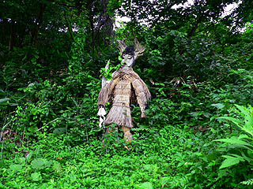

人形道祖神/米代川流域
秋田人形道祖神巡りはまだまだ続く。
・・・っと、その前にチョット休憩。秋田で見かけたその他の珍奉納を。
その１；蛇奉納
大館市内の寺で見かけた蛇奉納。
蛇の奉納自体はさして珍しくないがこれだけ数が揃うと迫力がある。薮塚ヘビセンター状態。
鉄製の蛇は一体一体が微妙〜に違うカタチをしている。一点モノって事？これを作っている工場とかさぞかし壮観でしょうなあ。
その2；お椀奉納
男鹿半島の塞の神という集落にあった地蔵堂。クルマで通り過ぎた瞬間、堂内のただならぬ気配を察し急ブレーキ。
中に入ってみるとお椀まみれのお地蔵さんがいました。
お椀は様々な種類があったので、複数の人が奉納したと考えられる。
お椀の内側には奉納者名と願い事が書かれている。また、棚の下には以前奉納されていたと思われるお椀が積まれていた。
それにしてもお椀を奉納するってこの辺では普通なのだろうか？
私は見た事ないぞ。
その3；案山子奉納？
これまた男鹿半島。お椀地蔵の近くの辻で見かけた謎の人形。
最初、案山子かと思ったのだが、田畑もないところなので近寄ってみると百万遍念仏云々と書かれた柱に括り付けられていた。
これもまた人形道祖神の一種なのだろうか。
子供のような人形はそのカラフルな色合いをもって路傍においてかなり強烈なインパクトを放っている。
この種の人形道祖神は見た事はないが、百万遍念仏に関したものであるとすれば、今まで紹介して来た秋田県の人形道祖神とは一線を画する存在かと思われる。
となりに庚申碑などが立っている事を合わせ考えると、どちらかといえばお地蔵さんの代りなのかもしれない。
じゃあ、何で案山子みたいなお地蔵さんが？という疑問も湧いてくるのだが、男鹿の闇は深うございますから。
様々な習俗が混在した、いかにも東北地方の民間信仰っぽい感じが印象的だった。
さて、本題に戻ります。
人形道祖神巡り、お次は大館から米代川を下って能代市周辺まで移動して来た。
二ツ井の中心部から南に位置する小掛集落。米代川の支流内川沿いにある。
内川に架かる橋を越え、集落に入ると早速ショウキ様と呼ばれる人形道祖神がお迎えしてくれる。
杉の葉で覆われた身体、赤い木製の頭部。秋田県北部の人形道祖神としては比較的スタンダードな形状といえる。
特徴的なのはキセルらしきモノをくわえている事と個人的には金と銀にペイントされている歯がいいですねえ。
そういえば一時、Bボーイ系のオシャレアイテムとして金歯が流行ってましたねえ〜。
このショウキ様をみるとNIGOとか思い出しちゃうのは私だけ？
このショウキ様は男神だという。
一方、女神はどこかというと、コレが良く判らない。
色々な人に聞き、何とか女神のショウキ様に出会う事が出来た。
小掛の皆さん、お騒がせしました。
 これが女神のショウキ様である。
といっても、男神と全く変わらない。違いは目が銀色になっているくらいだ。つーか、女神なのに髭付き？で、モヒカン？しかも、モップのブラシ？
あっ、でも眉の微妙な角度で男神の方が少し恐そう。
写真を撮っていると周りで農作業をしている方々が興味深そうにわらわらと集まって来た。
皆さん曰く、ここのショウキ様は秋に着せ替えをするそうだ。
その祭は大層にぎやかで、地元テレビ局の取材も来るそうである。
で、古い杉の葉を戸口に掲げたり、供えられた団子を食べたりすると風邪除けになるという。
それにしてもキセルをくわえてウッシッシ・・・という表情が堪りませんなあ。
これが女神のショウキ様である。
といっても、男神と全く変わらない。違いは目が銀色になっているくらいだ。つーか、女神なのに髭付き？で、モヒカン？しかも、モップのブラシ？
あっ、でも眉の微妙な角度で男神の方が少し恐そう。
写真を撮っていると周りで農作業をしている方々が興味深そうにわらわらと集まって来た。
皆さん曰く、ここのショウキ様は秋に着せ替えをするそうだ。
その祭は大層にぎやかで、地元テレビ局の取材も来るそうである。
で、古い杉の葉を戸口に掲げたり、供えられた団子を食べたりすると風邪除けになるという。
それにしてもキセルをくわえてウッシッシ・・・という表情が堪りませんなあ。
一方こちらは能代市の鶴形。
ここの集落にも数体のショウキ様が存在する。この鶴形のショウキ様の特徴は何といってもその特異な頭のカタチである。
まずは上（カミ）のショウキ様。集落へ入る東の入口に立っている。
御覧の通り、この世のものとは思えない恐ろしいいでたちである。高さは2.5メートル程。
槍を持ち木陰に立つその姿は集落の守護神としてはインパクト満点である。
実はこのショウキ様、木の根を逆さまにして目鼻を付けてあるのだ。
張り出した木の根はそのまま鬼の角をイメージさせる。木の根をチョイスするのにも見立てのセンスが大事だという事だろうか。
「人形道祖神」によれば平成元年には何とスーツを着ていたという。
人形作りを簡略化してスーツを着させたのだろうが、現在は再びトラディショナルスタイルに回帰している。
それはそれでよろこばしい限りだが、スーツ姿のショウキ様もチョット見たかったぞ。

こちらは集落と国道の間にある道を見下ろす草むらの中にあったショウキ様。
草むらの中に立つ人形を見た時は胆を冷やす思いだった。恐え〜！
次の人形道祖神にGO!
人形道祖神に戻る
珍寺大道場 HOME